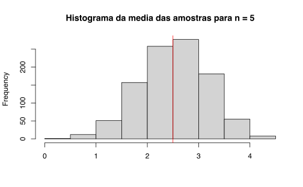
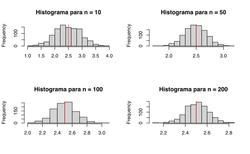
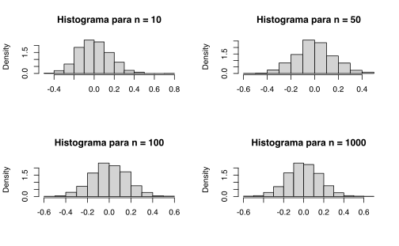

# Bom
x <- vector("numeric", 1000)
# Ruim
x <- c()Disclaimer
Este é um repost antigo que fiz ainda na época do mestrado em economia. Apesar de intuitivo o código dos loops abaixo pode ser muito ineficiente. De maneira geral, for-loops são melhores do que loops feitos com repeat; melhor ainda é montar funções e usar parallel::mclapply ou furrr::future_map. Vale notar que é sempre bom pré-alocar (ou pré-definir) vetores antes de um for-loop
Resultados assintóticos
Lei dos Grande Números
A Lei dos Grandes Números (LGN) é um resultado assintótico bastante utilizado em econometria. Numa definição informal, a LGN nos diz que uma média amostral converge para para a média verdadeira dos dados. Isto é, se temos uma sequência de variáveis aleatórias \(x_{1}, x_{2}, \dots , x_{n}\) independentes e identicamente distribuídas:
\[\begin{equation} \frac{1}{n}\sum_{i = 1}^{n} x_{1} \to \mathbb{E}(x) \end{equation}\]Vamos criar uma amostra de cinco observações a partir de uma distribuição uniforme e tirar a média destas observações. Lembre-se que este distribuição depende de dois parâmetros, digamos \(a\) e \(b\). A esperança de uma uniforme é simplesmente \(\frac{b-a}{2}\). Podemos repetir este processo 1000 vezes e fazer um histograma dos resultados.
No código abaixo cria-se um vetor \(x = (x_{1}, x_{2}, \dots)\) genérico para armazenar valoes. O loop vai inserindo neste vetor a média de uma amostra de cinco observações a partir de uma distribuição uniforme com \(a = 0\) e \(b = 5\). A cada iteração do loop uma nova amostra é gerada e sua média é salva no vetor \(x\) na posição \(x_{i}\). Depois de gerar estes valores faz-se um histograma deles.
x <- vector("numeric", length = 1000) # cria um vetor para armazenar os valores
for(i in 1:1000){ #loop para gerar os valores
# computa a media de uma amostra com 5 observacoes
x[i] <- mean(runif(n = 5, min = 0, max = 5))
}
# Histograma
hist(x, main = "Histograma da media das amostras para n = 5", xlab = "")
# Linha vertical
abline(v = 2.5, col = "red")
Podemos fazer o mesmo para diferentes tamanhos de amostra. O código abaixo simplesmente faz um loop do código acima; o loop de fora varia n.
par(mfrow = c(2, 2)) # para exibir 4 graficos
for (n in c(10, 50, 100, 200)) { # loop para os diferentes tamanhos de amostra
x <- vector("numeric", 1000)
for (i in 1:1000) { # mesmo loop que o anterior
x[i] <- mean(runif(n, 0, 5))
}
# Plotando o histograma
hist(x, main = paste("Histograma para n = ", n, sep = ""),
xlab = "")
abline(v = 2.5, col = "red")
}
Note que as escalas dos gráficos são diferentes. Como era de se esperar, à medida que cresce o tamanho da amostra os valores vão se acumulando em torno da média verdadeira.
Outra maneira de visualizar a LGN é fazendo o seguinte experimento: sorteie um número a partir de uma distribuição particular e grave seu valor. Agora sorteie dois números a partir da mesma distribuição, tire a média dos valores e grave o resultado. Agora faça o mesmo com três números, quatro números e assim por diante. O código abaixo faz isto para uma distribuição normal padrão.
x <- vector("numeric", 200)
for (n in 1:200){
x[n] <- mean(rnorm(n))
}
plot(x, type = "l", xlab = "", ylab = "")
abline(h = 0, col = "red", lty = 2)Teorema Central do Limite
O segundo resultado importante que se usa em econometria é o Teorema Central do Limite (TCL). Existem algumas variantes do TCL que usam diferentes hipóteses, mas, novamente sendo informal, o TCL diz que se tivermos uma amostra qualquer \(x_{1}, x_{2}, \dots , x_{n}\), então \(\sqrt{n}\frac{\overline{x} - \mu}{\sigma}\) segue uma distribuição normal padrão, onde \(\overline{x}\) é a média amostral, \(\mathbb{E}(x) = \mu\) e \(\text{Var}(x) = \sigma^{2}\). Para visualizar este resultado podemos novamente fazer o experimento usando a distribuição uniforme.
par(mfrow = c(2, 2)) # para exibir 4 graficos
for (n in c(10, 50, 100, 200)){ # loop para os diferentes tamanhos de amostra
for (i in 1:1000){ # mesmo loop que o anterior
x[i] <- mean(runif(n, 0, 10))
}
x_normalizado <- sqrt(n)*(x - 5) / sqrt(100/12) # transforma a variavel
# plota o histograma usando a densidade da frequencia de cada observacao
hist(x_normalizado, main = paste("Histograma para n = ", n, sep =""),
freq = F, xlab = "", breaks = 20)
# superimpoe uma curva normal padrao
lines(seq(-4, 4, by = .1), dnorm(seq(-4, 4, by = .1), 0, 1),
col = "dodgerblue4", lwd = 3)
}Note que este resultado vale para qualquer sequência de variáveis i.i.d (independentes e identicamente distribuídas). Considere, por exemplo, uma sequência de variáveis aleatórias independentes que segue uma distribuição beta.
\[\begin{equation} f(x) = \frac{x^{\alpha - 1}(1-x)^{\beta - 1}}{B(\alpha, \beta)} \end{equation}\]onde \(B(\alpha, \beta) = \frac{\Gamma(\alpha)\Gamma(\beta)}{\Gamma(\alpha + \beta)}\). A esperança da distribuição beta é dada por
\[\begin{equation} \mathbb{E}(x) = \frac{\alpha}{\alpha + \beta} \end{equation}\]Uma distribuição beta depende de dois parâmetros. Usando a função dbeta podemos simular algumas pdfs.
Note que uma implicação do TCL é que, se \(x_{i}\) for i.i.d. com esperança igual a \(\mu\), então
\[\begin{equation} \sqrt{N} \left ( \frac{1}{n}\sum_{i = 1}^{N}x_{i} - \mu \right ) \to \text{N}(0, \sigma^{2}) \end{equation}\]Isto é, não precisamos saber qual a forma da variância da distribuição para aplicar o TCL. Os loops abaixo são essencialmente idênticos aos anteriores: a diferença é que desta vez os histogramas vão representar variáveis normais de média zero com variância \(\sigma^{2}\), que é aproximadamente igual à variância da distribuição beta.
par(mfrow = c(2, 2)) # para exibir 4 graficos
for (n in c(10, 50, 100, 1000)){ # loop para os diferentes tamanhos de amostra
for (i in 1:1000){ # mesmo loop que o anterior
x[i] <- mean(rbeta(n, 2, 5))
}
x_normalizado <- sqrt(n)*(x - 2/7) # transforma a variavel
hist(x_normalizado, main = paste("Histograma para n = ", n, sep =""),
freq = F, xlab = "") # plota o histograma usando a densidade da frequencia de cada observacao
}
Dois casos anômalos
O TCL nos diz: \[\begin{equation} \sqrt{n} \left ( \frac{\overline{x} - \mu}{\sigma} \right ) \to N(0,1) \end{equation}\] O termo \(\sqrt{n}\) é essencial para garantir este resultado. Qualquer transformação maior do que \(\sqrt{n}\) faz a variância crescer indefinidamente; qualquer transformação menor do que \(\sqrt{n}\) faz a variância diminuir indefinidamente, isto é, faz a distribuição colapsar num único ponto. Os dois códigos abaixo apresentam exemplos destes casos. O primeiro usa \(n^{\frac{3}{4}}\), o segundo \(n^{\frac{1}{4}}\).
par(mfrow = c(2, 2)) # para exibir 4 graficos
for (n in c(10, 50, 100, 1000)){ # mesmo loop que o anterior
for (i in 1:1000){
x[i] <- mean(runif(n, 0, 10))
}
x_normalizado <- n^(3/4)*(x - 5)/sqrt(100/12) # muda apenas o expoente de n
hist(x_normalizado, main = paste("Histograma para n = ", n, sep =""),
freq = F, xlab = "")
lines(seq(-4, 4, by = .1), dnorm(seq(-4, 4, by = .1), 0, 1),
col = "dodgerblue4", lwd = 3)
}par(mfrow = c(2, 2)) # para exibir 4 graficos
for (n in c(10, 50, 100, 1000)){ # mesmo loop que o anterior
for (i in 1:1000){
x[i] <- mean(runif(n, 0, 10))
}
x_normalizado <- n^(1/4)*(x - 5)/sqrt(100/12) # muda apenas o expoente de n
hist(x_normalizado, main = paste("Histograma para n = ", n, sep =""),
freq = F, xlab = "")
lines(seq(-4, 4, by = .1), dnorm(seq(-4, 4, by = .1), 0, 1),
col = "dodgerblue4", lwd = 3)
}